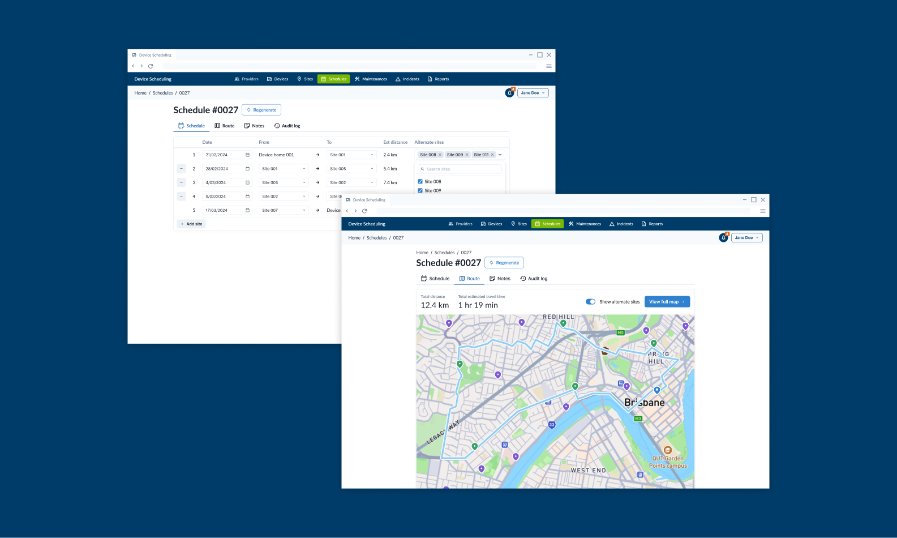
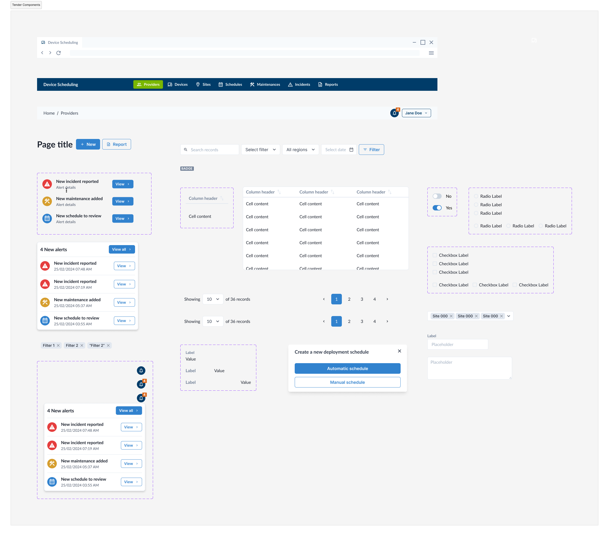

I worked on the design of a scheduling system intended to replace an Excel-based workflow. As part of a competitive tender, we were given a fixed set of requirements to adhere to while also addressing clear scalability challenges. The existing process limited how much work could be scheduled and managed, and most of the operational effort was spent manually selecting sites and validating schedules. The complexity was increased by different device types, each with their own processes and constraints, and by the difficulty of identifying when multiple devices were already co-located at the same site.
The core challenge was to transform a highly manual, spreadsheet-driven workflow into a scalable, automated system without losing the flexibility that users relied on in Excel. The solution needed to enable individuals to manage more work, support multiple device types and vendors, and provide better visibility across schedules, locations, and related equipment.
I focused on designing an automated scheduling workflow that reduced manual decision-making while still allowing human oversight. This included enabling vendors to log progress and confirm completed work, as well as streamlining how they reviewed and provided feedback on proposed schedules.
A key part of the design was introducing a more robust data model that clearly associated devices, locations, vendors, and schedules, and allowed users to easily navigate between related information. To support rapid alignment, I used a model-driven, breadth-first approach and held frequent design review sessions with the client’s team. These regular check-ins helped maintain transparency and build a shared understanding of the evolving product, particularly as early modelled versions of the application lacked visual polish.

Figma components used in the tender.
A lack of clearly defined acceptance criteria led to frequent back-and-forth with the client around scope and expectations. In retrospect, more discovery-focused activities—such as early prototyping and user testing—would have surfaced differences in mental models sooner and reduced ambiguity.
The breadth-first approach proved effective for quickly defining the application’s data entities and security model, but it was less well-suited to the user interface. Designing components primarily for desktop early on made it harder to introduce enhancements such as responsive, mobile-friendly variations later in the project. Given the time constraints and evolving understanding of the full scope, many components were designed and built in parallel with the rest of the application, rather than being established as a flexible system upfront.
Beyond scheduling, the work highlighted adjacent challenges such as invoicing—particularly comparing vendor invoices against estimated travel distances when real-world conditions required longer journeys. Another key insight was uncovering incorrect early assumptions: scheduling was initially designed around travel from a home base, but the primary use case involved devices moving from site to site. This meant that changes to one location had cascading effects on subsequent schedules, reinforcing the need for more interconnected, system-aware design thinking earlier in the process.consolidation assumptions when visually mapping fields revealed that seemingly duplicated data served different user needs across applications. In future projects, I would visualise these trade-offs earlier to better support shared decision-making with stakeholders.